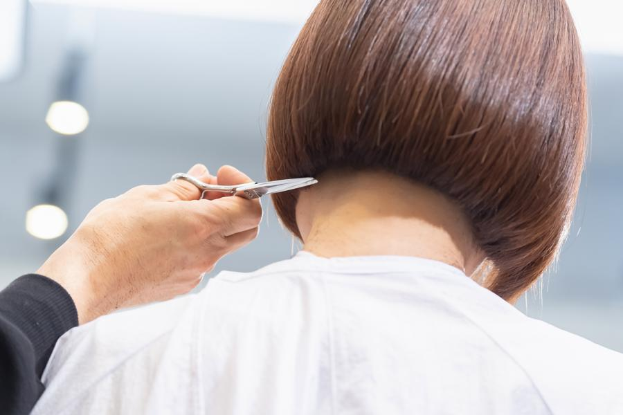

乾かすだけで、決まる形
くせが強い方に。
くせを伸ばしきらず、
流れる方向だけ整えます。
タオルで拭いたあと、
根元を乾かせばこの形に戻ります。
楽して、
きれいになりたい。
その楽を、
ここで作ります。
所要90分／カット+トリートメント込み
切った日がきれいなのは、
当たり前だと思っています。
問題は、
明日の朝です。
朝にがんばらなくていいように、
こちらがあなたの朝を想像してがんばります。
何時に起きて、
どこまで自分でやれるのか。
それが分かれば、
切り方でもパーマでも、
手は選べます。
だからカウンセリングでは、
なりたい髪型より先に「朝、何分使えるか」を聞きます。
スタイリスト／店主
どれも、
朝に手をかけずにきれいになるように作っています。
くせが強い方に。
くせを伸ばしきらず、
流れる方向だけ整えます。
タオルで拭いたあと、
根元を乾かせばこの形に戻ります。
ぺたんとなる猫っ毛の方に。
量を減らさず、
根元の向きで高さを出します。
手ぐしとドライヤーだけで、
その日の気分に寄せられます。
量が多くて朝に時間がない方に。
内側だけ量を調整し、
夜の乾かし方で翌朝の形が決まるようにします。
朝は触りません。
※ このページはポートフォリオ用のサンプルのため、写真はAdobe Stockのイメージ写真です。実際の制作ではお店の施術例が入ります。
6,600円
通常 7,700円／初回のみ
当日は、
なりたい形より先に「朝に使える時間」からお聞きします。

迎えがあるので、
終わる時間が読めないと困ります
カウンセリングのあと、
終わり時刻をお伝えしてから始めます。
初回は90分。
延びる場合はその前にご相談します。
次に来られるのが3か月後でも大丈夫ですか
伸びたときに崩れる場所を先に整えておくので、
間隔が空いても形は保ちます。
ただ、
一番きれいなのは2か月目までです。
来られるときに来てください。
子どもを連れて行けますか
お連れいただけます。
ご予約時にお知らせください。
席の配置を調整します。
【この項目は実案件ではお店に必ず確認します】
当日、
追加のメニューをすすめられませんか
すすめません。
初回にご案内した金額のままお会計します。
必要な場合だけ、
次回の相談としてお伝えします。
話しかけられるのが苦手です
ご予約時に「静かに過ごしたい」を選べます。
カウンセリング以外はお声かけしません。
担当は毎回同じ人ですか
スタイリストは2名だけです。
ご予約時に指名でき、
担当が変わることはありません。
くせが強くても大丈夫ですか
くせを消す前提では作りません。
どこまで活かしてどこを抑えるかを、
最初にご相談します。
※ 図は道順の説明用です。
実際の制作ではGoogleマップを埋め込みます。
改札を出て左手、
商店街側の出口です。
アーケードの下を3分ほど。
右手にパン屋が見えたら合っています。
商店街の終わりに花屋があります。
そこを右に入って1軒目です。
1階です。
階段はありません。
ベビーカーのまま入れます。
※ サンプルサイトのため、
ボタンは動作しません。
実際の制作ではGoogleマップにつなぎます。